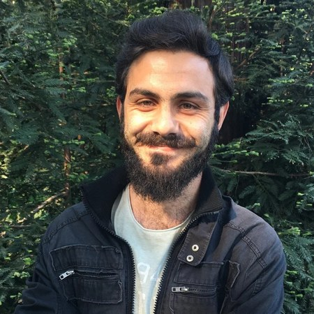
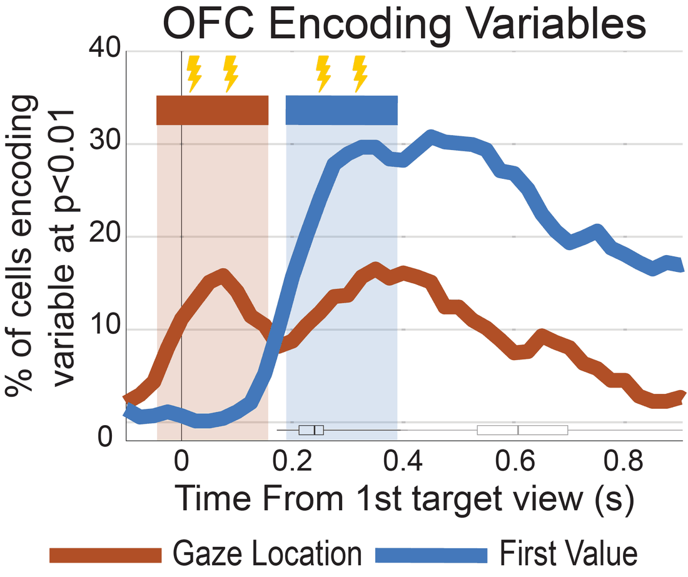
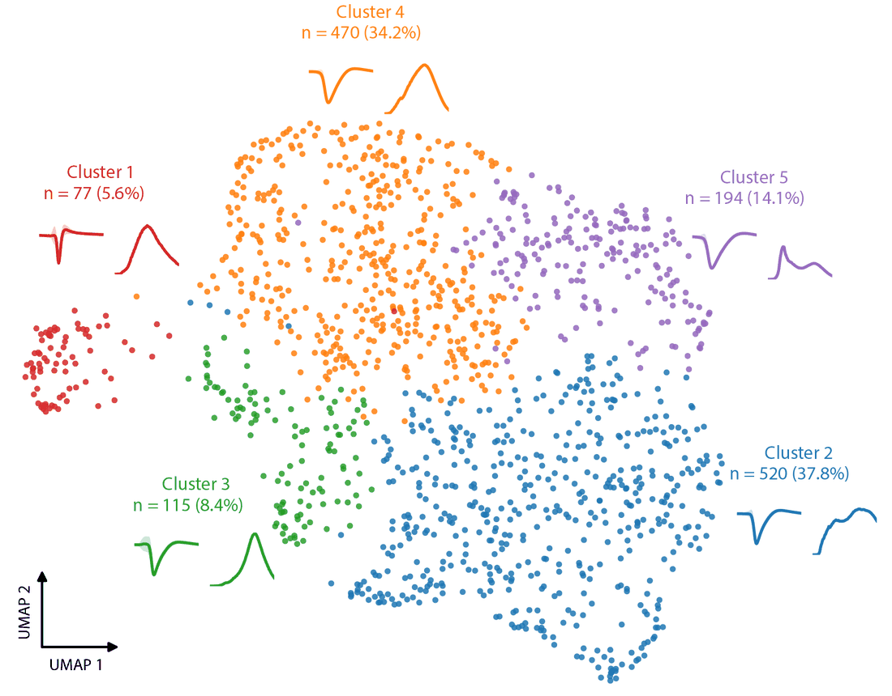
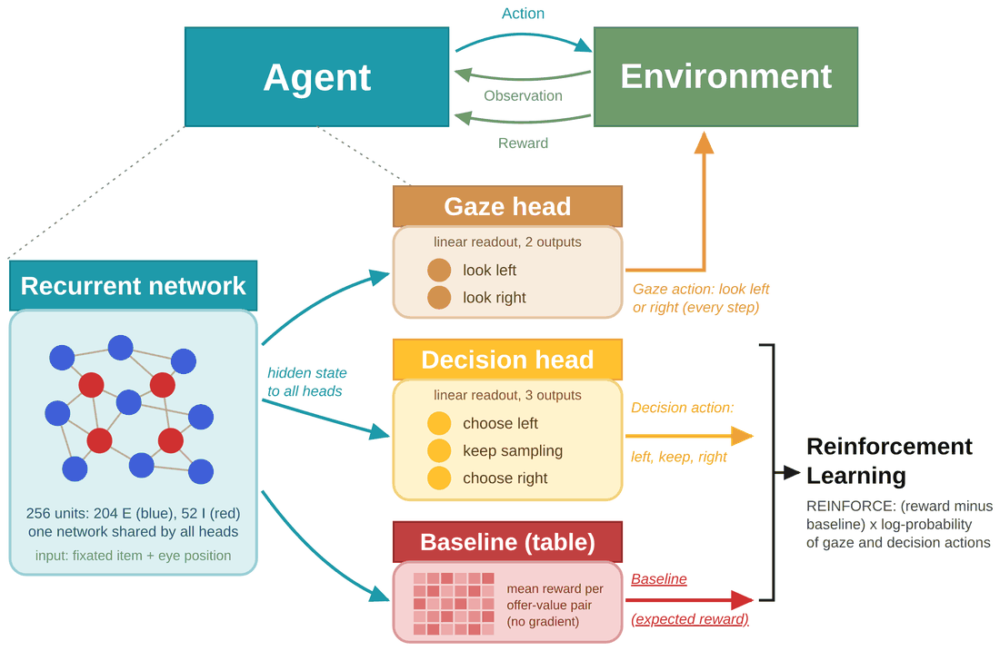

PhD Candidate in Neuroscience
McGinty Lab, Center for Molecular and Behavioral Neuroscience, Rutgers University–Newark
emirhan.albayrak@rutgers.edu
Seeking a postdoc - starting Fall 2027I am a systems neuroscientist studying how the brain evaluates options and turns that into choice. To choose between two things, you have to know what each is worth, and where it is located. My work is on how the orbitofrontal cortex (OFC) carries both kinds of information, and whether the location signals are incidental to valuation or something choice actually depends on.
I am a PhD candidate in Vincent McGinty's lab at Rutgers University–Newark, with three primary ongoing projects. The first tests the causal role of OFC's location signals, using closed-loop electrical stimulation triggered in real time on the animal's gaze. The second asks how location, value, and choice information is represented across physiologically distinct cell types in OFC. The third concerns gaze. In free-gaze paradigms, animals tend to choose the option they have looked at longer. I ask whether this gaze bias emerges from the sampling process, by training recurrent neural networks that perform the same task as the animals, under free gaze.
My core skill set includes non-human primate training, behavioral rig development, single-unit recording, closed-loop stimulation with eye tracking, and analysis and modeling in MATLAB, Python, and PyTorch.
I started out in economics. Three years in, I wanted to know what a brain was doing to produce the choices those models described, so I left for psychology and later did a master's in biomedical engineering, all at Boğaziçi University.
Subjective value or preference is not a physical property of an option; it is constructed in real time from multiple attributes that are not directly comparable, including but not limited to taste, cost, effort, gain and risk. I am interested in how frontal circuits solve this comparison problem, at the level of implementation: what the circuitry is, which cell types carry which component, how the population moves through a decision, and what fails when one stream of information is perturbed. Those questions led my work towards putative cell types, causal perturbation of value and location signals, and network models that may dissociate candidate mechanisms. That is what I want to build on in a postdoc starting in Fall 2027, in a setting where circuit-level measurement and modeling run in parallel.

Does the OFC's representation of where a target is located contribute to choosing it? During economic decisions, OFC neurons encode both the value and the location of decision targets. The role of value signals is well characterized. The role of location signals is not: they may just reflect where the animal is looking rather than contribute to the choice itself.
The two signals peak at different times after gaze lands on a target, and I exploit that offset to test the causal role of each. Using closed-loop electrical stimulation in OFC, triggered in real time on the animal's gaze, I stimulate in an early window, when the location signal is near its peak and the value signal is still weak, and in a later window, when the reverse holds. Stimulating in the two windows biases choice in opposite directions.

Does OFC divide the work of a decision across different cell types? Cortical computation depends on physiologically distinct cell types with different roles in the local circuit, but in primate work these cell types are usually pooled, and neurons are treated as interchangeable members of one population. Using unsupervised clustering on spike waveforms and interspike intervals, I identify clusters of OFC neurons with distinct physiologies and ask how location, value, and choice information is distributed across them.
One putative inhibitory cluster (cluster 1) stands out: it carries location information early and strongly, and its trial-to-trial activity predicts the upcoming choice. Such choice-predictive activity is absent from OFC neurons at the single-cell level when the population is treated as homogeneous (McGinty & Lupkin, 2023).

When people (and animals) choose between options, they sample them with their eyes before deciding. How they sample predicts what they pick: the option looked at longer, or fixated last before the decision, is the one more likely to be chosen. Many network models of decision-making ignore this sampling process: the model receives information about both options at once, so there is no gaze to modulate the choice.
I am building a model that generates its own sampling: a single recurrent network read out by separate gaze and decision heads. The gaze head chooses where to look next, and the decision head either commits to one of the options or keeps sampling, so the choice unfolds over a sequence of fixations the model generates for itself.
The first goal is to see whether gaze-related choice biases emerge from this architecture without being built into it, and if so, what mechanisms produce them. The second is to reproduce the effects of stimulating at either value- or location-encoding epochs in the model, where the state of the network at the moment of perturbation is fully observable, a way of generating candidate mechanisms for the stimulation effects that can then be tested in the animal.
Full list on the CV.